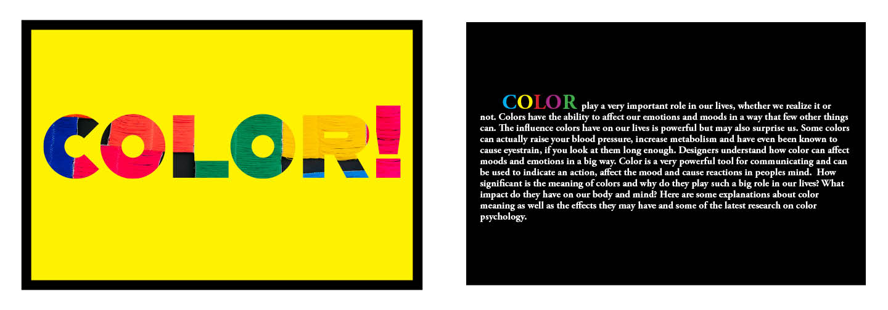
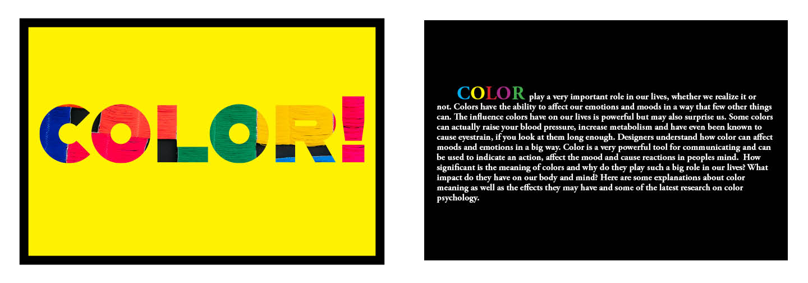
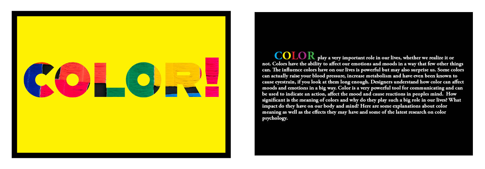

I have a special sense of color. I think color is alive. I would like to introduce each color I like in the form of a brochure, and use the rhythm between words and pictures to represent each color form.
